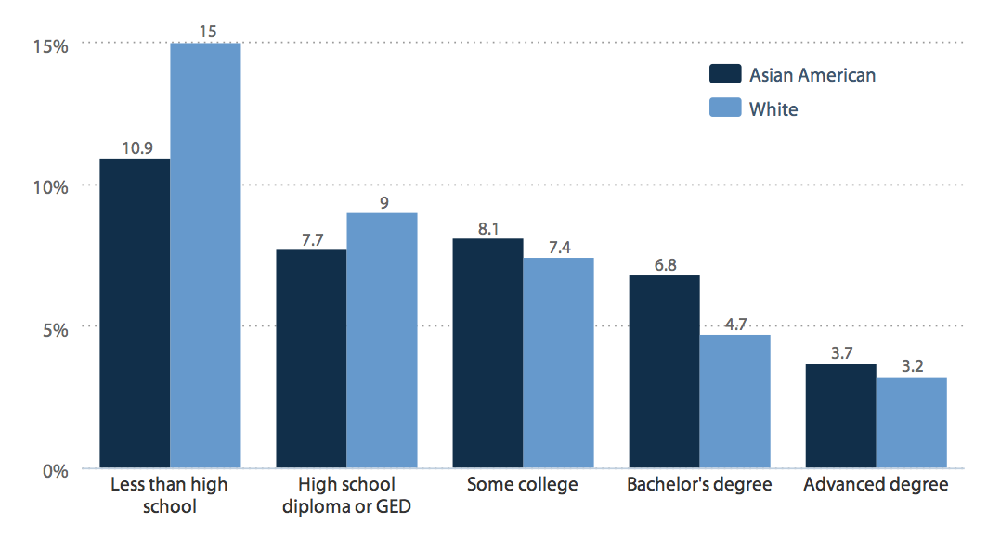
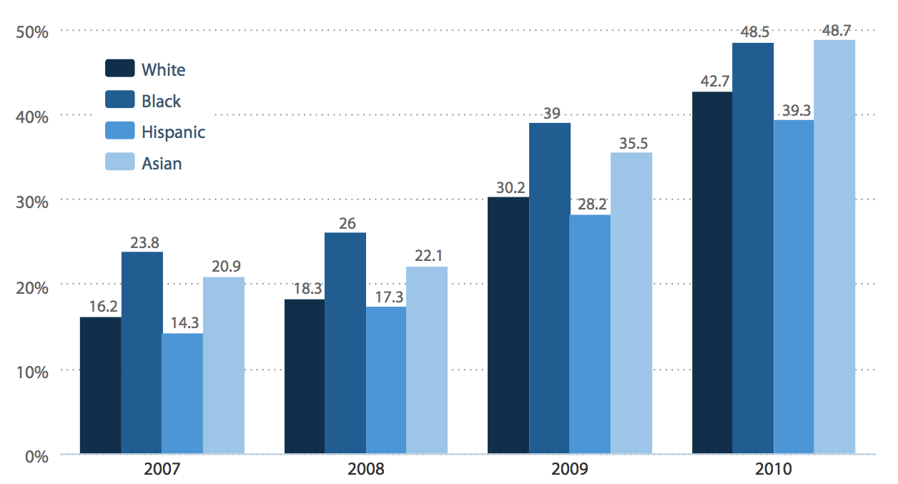

This issue matters even today, as numerous sources indicate. Two terms separate the two groups: the “model minority” and the “yellow peril.” The former depicts Asian Americans as bright individuals with high intelligence while the latter depicts just the opposite. Both terms, while debunked, work to distinguish this pan-ethnicity from the rest of the working class population. As NBC News indicates, due to the rising Coronavirus situation, many believe that Asian Americans are at fault for initiating the global pandemic (Lee, 2020). This idea has turned many “model minority” Asian Americans to be classified as a “yellow peril,” where the portrayal is of dangerous yellow-skinned people threatening the Western way of life (Bowling Green State University, 2014). While the prevailing notion of Asian Americans prior to the Coronavirus situation was of the model minority, misinformation, such as how China was at fault for creating the virus, has led to the portrayal of this group as a “yellow peril.” It was only after numerous decades of fighting racial injustice that Americans came to peace with the “model minority” stereotype over the “yellow peril,” but this one incident has reverted all those years of hard work (University of Southern California, 2020).
This distinction between the two groups allows us to explain how numerous Asian Americans have lost their businesses. With the loss of customers, Asian-owned businesses, such as China King Buffet in Woodbridge, Virginia, have been forced to close long-standing establishments (Kandil & Yam, 2020). This leads to Asian American unemployment and may lead to poverty. In fact, according to Pawan Dhingra and Robyn Rodriguez (2014), this perpetual racism over the past decades, not just recently, have resulted in a poverty rate much higher than the national average (pg. 51).
UNEMPLOYMENT RATES, BY RACE AND EDUCATION, 2010
Source: Economic Policy Institute
This graph indicates that, in 2010, Asian Americans unemployment rates were on par with white unemployment rates. It must also be noted, however, that despite the two races on par with each other as their education level increases, educated Asian Americans account for a greater population than whites. This is significant because it shows how, for example, for those with advanced degrees, 3.7% Asian American unemployment cannot be compared to the 3.2% white unemployment.
LONG-TERM UNEMPLOYMENT SHARES, BY RACE AND ETHNICITY, 2007-2010
Source: Economic Policy Institute
It is clear by this graph how one’s racial and ethnic identity contributed to their long-term unemployment during the Great Recession from 2007 to 2010. Asian American long-term unemployment rates were on par with those of the African Americans, where Asian Americans suffered between 4 and 6 percent greater long-term unemployment.